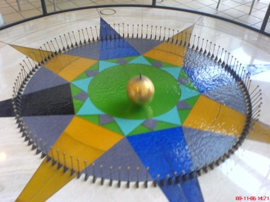

🎯 Deneyin Amacı
Dünya’nın kendi ekseni etrafında döndüğünü göstermek.
🧰 Gerekli Malzemeler
• Uzun ip
• Ağırlık (çekül)
🧪 Deneyin Yapılışı
Uzun bir ipe bağlı ağırlık yüksek bir noktaya asılır.
Sarkaç salınıma bırakılır ve zamanla salınım düzleminin değiştiği gözlemlenir.
🧠 Deneyin Fiziği
Foucault sarkacı, Dünya’nın döndüğünü doğrudan gösteren bir deneydir.
Sarkaç sabit bir düzlemde salınırken, Dünya döndüğü için gözlemciye göre yön değiştiriyor gibi görünür.
Bu durum aslında Dünya’nın dönüşünün bir sonucudur.
1851 yılında Léon Foucault tarafından Paris’te gerçekleştirilmiştir.

Foucault sarkacı örneği
🎬 Deney Videosu

Videoyu YouTube'da izlemek için görsele tıklayın.